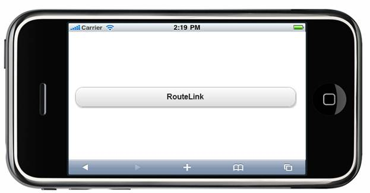
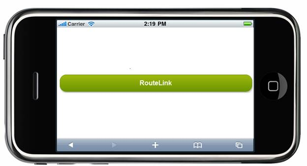

The RouteLink Button control supports built-in themes that provide great visual appeal that are suitable for various layouts. It supports the following four built-in Syncfusion themes to enhance the look and feel:
· BlueLight
· DarkNight
· MetroBlue
· Spinach
Properties
|
Name |
Description |
Type of the Property |
Value it Accepts |
Dependency |
|
AutoFormat
|
To define syncfusion themes |
enum
|
MobSkins.BlueLight, MobSkins.DarkNight, MobSkins.MetroBlue, MobSkins.Spinach
|
NA |
Using Builder
The following steps explain the appearance customization of the RouteLink Button control using Builder.
1. In the view, invoke the RouteLink Button helper with the text of the button as first argument followed by the AutoFormat method with the desired theme as its argument.
|
[ASPX] <% = Html.MobSyncfusion().RouteLink("RouteLink", "Button").AutoFormat(MobSkins.Spinach)%>
[Razor] @{ Html.MobSyncfusion().RouteLink("RouteLink", "Button").AutoFormat(MobSkins.Spinach) . Render(); } |
2. Build and run the application.
The output is shown in the following screenshot.

Figure 218: RouteLink Button—AutoFormat Property
If users click the route link button, the theme will be applied to the control. The following screenshot shows how the theme is applied to the control.

Figure 219: RouteLinkButton while Clicking